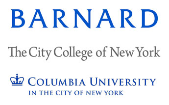

What is CUWiP?
The APS CUWiP goal is to help undergraduate women continue in physics by providing them with the opportunity to experience a professional conference, information about graduate school and professions in physics, and access to other women in physics of all ages with whom they can share experiences, advice, and ideas.
What's the plan?
We will have talks, panels, food, posters and more.
Here is a pdf of the entire program.
Local Organizers
APS CUWiP @ NYC 2018 is a partnership with the following organizers:

National Sponsors
These conferences are supported in part by the National Science Foundation (PHY-1346627) and the Department of Energy Office of Science (DE-SC0011076). Further details are available on the APS conference website.